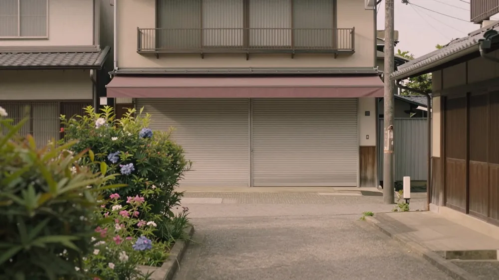

この制度は、取引先が倒産した際に無担保・無保証人で資金を借り入れられる仕組みとなっており、掛金の納付状況に応じて最大8,000万円まで対応が可能です。
経営セーフティ共済(中小企業倒産防止共済)とは
経営セーフティ共済（中小企業倒産防止共済制度）は、取引先の事業者が倒産した際に、中小企業が連鎖倒産や経営難に陥ることを防ぐための制度です。この制度を利用すると、取引先が倒産して売掛金などの回収が困難になったとき、その事業者との取引の確認が済み次第、無担保・無保証人で資金を借り入れられます。
掛金の月額は5,000円から20万円の範囲で自由に選べ、増額や減額も可能です。法人の場合は損金、個人事業主の場合は必要経費に算入できるため、税務上のメリットもあります。ただし、令和6年10月1日以降に解約して再加入する場合、解約日から2年を経過する日までに支出する掛金は算入できない点に注意が必要です。
また、自己都合で解約しても、掛金を12か月以上納めていれば掛金総額の8割以上、40か月以上なら全額が解約手当金として戻ってきます。12か月未満の場合は掛け捨てになります。こうした仕組みにより、売掛金の回収が止まるリスクに備えながら、資金繰りの安定を図ることができます。
借入れの対象になる取引先の倒産・ならない倒産
取引先が倒産して売掛金の回収が困難になった場合、経営セーフティ共済から資金を借り入れることができます。この制度で対象となる倒産には、法的整理や取引停止処分、でんさいネットの取引停止処分、私的整理、そして災害による不渡りや支払不能などが含まれます。

一方で、対象外となるケースもあります。それは、取引先が夜逃げをした場合です。夜逃げは対象外とされているため、こうした状況で売掛金の回収が止まったとしても、この制度による借入れは受けられません。
対象となる倒産が確認された場合、その事業者との取引の確認が済み次第、借入れが可能になります。取引先が法的な手続きを経て倒産したかどうか、あるいは災害などの不可抗力で支払い不能に陥ったかどうかによって、対象の範囲が異なります。
売掛金の回収が止まるリスクに備えるためには、事前に取引先の状況を見極めることが重要です。対象となる倒産の形態を理解しておくことで、いざという時にスムーズに対応できます。
ただし、夜逃げは対象外であるため、取引先の信用調査や契約時の確認を徹底することが、リスク管理の基本となります。制度の適用範囲を正しく把握し、適切な対策を講じていきましょう。
借りられる金額の上限
経営セーフティ共済で借入れできる金額の上限は、2つの基準のうち少ない方の額となります。1つ目は、取引先が倒産して回収が困難となった売掛金債権などの額です。2つ目は、これまで納付してきた掛金総額の10倍で、この上限は最高8,000万円と定められています。
このように、借入れの上限は、実際に発生した損失額と、積み立てた掛金に基づく限度額の両方を考慮して決まります。取引先が倒産し、売掛金の回収が困難になったと判断された時点で、その事業者との取引確認が済み次第、この上限額まで借入れが可能となります。
なお、借入れは担保や保証人を必要とせず、無担保・無保証人で受けられます。ただし、夜逃げによる倒産は対象外となるため、注意が必要です。
掛金と税務上の扱い(再加入時の注意)
経営セーフティ共済の掛金は、法人の場合は損金、個人事業主の場合は必要経費として計上できます。これは、支払った掛金がそのまま費用として認められることを意味し、税負担の軽減につながります。
ただし、再加入する際には注意が必要です。令和6年10月1日以降に解約して、再び加入するケースでは、解約した日から2年を経過する日までに支出した掛金は、損金や必要経費として計上できません。この期間に支払った分は、税務上の優遇を受けられないため、再加入のタイミングや計画を立てる際は、この2年間のルールを考慮する必要があります。
なお、掛金の月額設定は5,000円から20万円の範囲で自由に選べ、必要に応じて増額や減額も可能です。税務上の扱いと合わせて、自社の資金計画に合わせて柔軟に設定できる点も、この制度の特徴の一つです。
解約したときに戻るお金
自己都合で解約する場合、戻ってくるお金は「解約手当金」と呼ばれます。この金額は、これまで納めた掛金の総額に対して、納付期間の長さによって決まります。
まず、掛金を12か月以上納めていれば、掛金総額の8割以上が戻ってきます。さらに、納付期間が40か月以上になると、納めた掛金総額が全額戻ってきます。
一方で、納付期間が12か月未満の場合は、解約手当金は支給されません。つまり、この期間で解約すると、これまで納めた掛金はすべて失われる、いわゆる掛け捨ての状態になります。
解約を検討する際は、この納付期間の基準を踏まえて判断することが重要です。特に、12か月という区切りを意識することで、手元に戻ってくる金額が大きく変わります。また、40か月を超えると全額が戻ってくるため、長期的な視点で資金計画を立てることも有効です。
なお、掛金は法人であれば損金、個人事業主であれば必要経費として計上できます。しかし、令和6年10月1日以降に解約して再加入する場合、解約日から2年を経過する日までに支出する掛金は、損金や必要経費に算入できません。この税務上の制約も考慮し、解約のタイミングや再加入の時期を慎重に検討する必要があります。
解約手当金の支給基準や、税務上の扱いに関する詳細な条件は、制度の運用状況や関連する税制改正によって変更される可能性があります。具体的な金額や手続きについては、最新の情報を確認するため、中小機構などの公的機関に直接問い合わせることをおすすめします。
本記事は一般的な制度の説明です。個別の事情は司法書士・弁護士・税理士などの専門家にご確認ください。最終確認日: 2026年11月13日